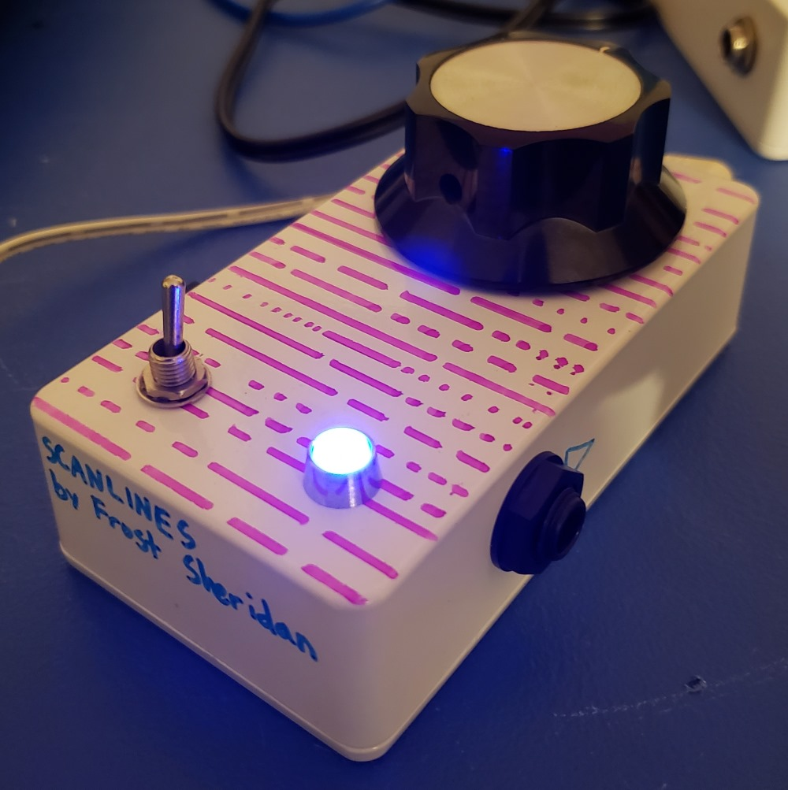

back to projects
scanlines
What even is this?
{kind=link}
Scanlines is an analog sample-rate reduction (also known as a bitcrusher) effect.
The effect samples the voltage of the incoming audio at a specific rate (set by the GIANT knob on top) and holds the output at that voltage level until the next sample is taken. Frequencies in the sound that are higher than the sample rate get thrown all over the audio spectrum, which makes your guitar/synth/whatever sound like it's coming from a retro video game or cheap electronic toy.
At the heart of this circuit is a 4066 analog switch IC, which acts like a relay but has no moving parts and can switch (almost) instantly. This switch is constantly being opened and closed by a 555 oscillator at a rate that is controlled by the knob. Every time the switch transitions from closed to open, the voltage of the incoming audio at that instant is 'saved' by a capacitor (C2 on the schematic) until the next sample is taken. This 'saved' voltage level is sent to the output of the effect, which means that the voltage of the output audio can only change at the frequency of the oscillator (the 'sample rate'), creating a stepped, jagged, nasty waveform.
Unlike other bitcrushers, this effect is a bit subtler because the circuit will let the dry signal through when the clock signal is high (when the switch is closed).
See below for a schematic and photos.
{kind=link}
{kind=link}
{kind=link}
{kind=link}
Created on 2019/12/12